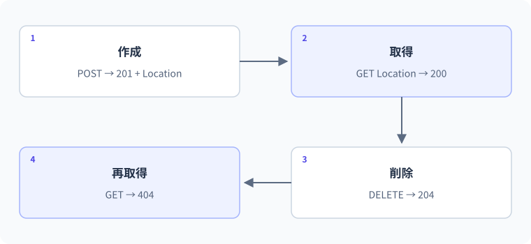

32 APIの検証と統合 — 詳細解説
APIの操作と状態を連続して検証する。
図解：APIの操作と状態を連続して検証する

APIの要求・処理・応答
最終レッスンでは、型、分岐、メソッド、オブジェクト、コレクション、LINQ、HTTP、DIを一つの処理経路として読みます。目標は大きな完成コードを暗記することではなく、「入力がどこから来て、どこで検証され、どの状態が変わり、何が返るか」を自分の言葉で説明できることです。
ここではローカル学習用のタスク一覧APIを題材にします。追加・一覧・個別取得・完了状態の更新・削除を持ちます。保存先はメモリで、再起動すると消えます。認証・認可・本番公開・永続データベースは別の設計課題として境界を明確にします。静的教材を開いてもこのAPIが裏で動くわけではありません。
APIの契約を先に決める
| メソッドと経路 | 入力 | 成功 | 主な失敗 |
|---|---|---|---|
| GET /todos | なし | 200と配列 | 予期しない失敗は500 |
| GET /todos/{id:int} | 整数ID | 200と対象 | 対象なし404 |
| POST /todos | title | 201、Location、作成対象 | 空白・長さ不正400 |
| PUT /todos/{id:int}/completion | done | 200と更新対象 | 対象なし404、done欠落400 |
| DELETE /todos/{id:int} | 整数ID | 204 | 対象なし404 |
完了状態を独立した資源の表現としてPUTする契約です。タスク全体のPUTへtitleを省略する曖昧さを避けています。同じdone=trueを繰り返しても、最終的に完了状態はtrueです。入力doneはbool?で受け、省略と明示的なfalseを区別します。
完全な統合サンプル
Microsoft.NET.Sdk.Web、net10.0、ImplicitUsingsとNullableがenableの独立したWebプロジェクトへ置きます。コンソールの短い例とは異なり、HTTPサーバーとして起動を継続します。
var builder = WebApplication.CreateBuilder(args);
builder.Services.AddProblemDetails();
builder.Services.AddSingleton<TodoStore>();
var app = builder.Build();
app.UseExceptionHandler();
app.MapGet("/todos", (TodoStore store) => Results.Ok(store.All()));
app.MapGet("/todos/{id:int}", (int id, TodoStore store) =>
{
Todo? item = store.Find(id);
return item is null ? Results.NotFound() : Results.Ok(item);
});
app.MapPost("/todos", (CreateTodo input, TodoStore store, ILogger<Program> logger) =>
{
AddResult result = store.TryAdd(input.Title);
if (result.Item is null)
{
return Results.ValidationProblem(new Dictionary<string, string[]>
{
["title"] = new[] { result.Error ?? "タイトルを確認してください。" }
});
}
logger.LogInformation("Todo {TodoId} created", result.Item.Id);
return Results.Created($"/todos/{result.Item.Id}", result.Item);
});
app.MapPut("/todos/{id:int}/completion", (int id, CompletionInput input, TodoStore store) =>
{
if (input.Done is not bool done)
return Results.BadRequest(new { error = "doneを指定してください" });
Todo? item = store.SetCompletion(id, done);
return item is null ? Results.NotFound() : Results.Ok(item);
});
app.MapDelete("/todos/{id:int}", (int id, TodoStore store) =>
store.Remove(id) ? Results.NoContent() : Results.NotFound());
app.Run();
public partial class Program { }
public record CreateTodo(string? Title);
public record CompletionInput(bool? Done);
public record Todo(int Id, string Title, bool Done);
public record AddResult(Todo? Item, string? Error);
public sealed class TodoStore
{
private readonly object _gate = new();
private readonly Dictionary<int, Todo> _items = new();
private int _nextId;
public AddResult TryAdd(string? rawTitle)
{
if (string.IsNullOrWhiteSpace(rawTitle))
return new(null, "タイトルは必須です。");
string title = rawTitle.Trim();
if (title.Length > 100)
return new(null, "タイトルの長さは100以内です。");
lock (_gate)
{
int id = checked(_nextId + 1);
var item = new Todo(id, title, false);
_items.Add(id, item);
_nextId = id;
return new(item, null);
}
}
public Todo[] All()
{
lock (_gate)
{
return _items.Values.OrderBy(item => item.Id).ToArray();
}
}
public Todo? Find(int id)
{
lock (_gate)
{
return _items.TryGetValue(id, out Todo? item) ? item : null;
}
}
public Todo? SetCompletion(int id, bool done)
{
lock (_gate)
{
if (!_items.TryGetValue(id, out Todo? item)) return null;
Todo updated = item with { Done = done };
_items[id] = updated;
return updated;
}
}
public bool Remove(int id)
{
lock (_gate)
{
return _items.Remove(id);
}
}
}AddProblemDetailsとUseExceptionHandlerは、予期しない例外を共通に扱う仕組みを構成します。Problem DetailsはHTTPエラー情報を構造化して表す形式です。この例が全ての400・404本文を同一形式に揃えるわけではありません。何も本文を返さない404も契約として扱います。秘密を含む例外情報を利用者へそのまま返す設計にはしません。
public partial class Programは、トップレベル文から生成されるProgram型へ宣言を追加する形です。partialは一つの型の宣言を複数箇所に分けられる指定です。後からWebApplicationFactoryを使う結合テストで対象の入口を公開型として参照するためにも使われます。この例だけの起動では、追加の独自Mainを作る必要はありません。
POSTの処理を一行ずつ追う
- 1① JSON本文
titleをCreateTodoへ結び付ける
- 2② DIで取得
共有TodoStoreとログを渡す
- 3③ TryAdd
null・空白・正規化後の長さを検証
- 4④ lock
他の保存操作と同時に採番しない
- 5⑤ Todoを作成
ID・整えたTitle・Done=false
- 6⑥ Dictionaryへ追加
成功後に次IDを更新
- 7⑦ 結果を返す
Itemがあれば成功、なければ検証エラー
- 8⑧ HTTPへ変換
201・Location・JSONを返す
Titleの検証を保存部品側へ置いているので、同じTodoStoreを別の入口から呼んでも制約を使えます。HTTP特有のステータスやValidationProblemはハンドラー側で作っています。TryAddはHTTPの型を知らず、API側はDictionaryの内部を直接操作しません。
このメモリ操作は短い同期処理なので、無理にasyncやTask.Runを付けていません。データベースや外部通信へ保存先を変える段階で、非同期APIとキャンセルの伝播を設計します。全メソッドの末尾へAsyncを付けるだけでは非同期I/Oにはなりません。
一覧を返す前にToArrayで確定する理由
Allはロック内で一覧を並べ、ToArrayで結果を確定してから返します。遅延実行のIEnumerableだけを返すと、ロックを出た後で実際の列挙が始まり、別の要求による変更と競合する可能性があります。第19レッスンの「いつ列挙するか」が共有状態の安全性につながります。
返すTodoはrecordで、ここではint・string・boolだけを持ち、プロパティもinitで初期化される形です。配列内部のTodo参照を共有していても、通常の呼び出し側から保存済みTodoのプロパティを書き換えない設計です。後から可変なListプロパティを追加したら、同じ安全性が自動で続くわけではありません。
更新前後の参照と状態
SetCompletionは元のTodoを書き換えるのではなく、withで新しいTodoを作ってDictionaryの値を置き換えます。IDとTitleをコピーし、Doneだけを指定した値へ変えています。
- 1更新前 _items[1]
Todo A { Id=1, Title=Study, Done=false }
- 2withで作成
Todo B { Id=1, Title=Study, Done=true }
- 3更新後 _items[1]
Todo Bを参照
- 4先に返した応答用参照
Todo Aを持っていれば以前の状態を表す
ロックは検索から置換までを一つの区間にします。Dictionaryがスレッド安全な型に変わったとしても、複数操作のまとまり全体をどう保証するかは別に考える必要があります。
手元でのHTTP確認手順
サンプルのプロジェクトでビルド後、次のようにローカルへ限定して起動します。
dotnet run --no-launch-profile -- --urls http://127.0.0.1:5080別の端末でPowerShellを使う確認例です。全て同じ起動中のAPIを対象にします。
$base = "http://127.0.0.1:5080"
$body = @{ title = "Study" } | ConvertTo-Json
$created = Invoke-RestMethod -Method Post -Uri "$base/todos" -ContentType "application/json" -Body $body
$id = $created.id
Invoke-RestMethod -Method Get -Uri "$base/todos/$id"
$update = @{ done = $true } | ConvertTo-Json
Invoke-RestMethod -Method Put -Uri "$base/todos/$id/completion" -ContentType "application/json" -Body $update
Invoke-RestMethod -Method Delete -Uri "$base/todos/$id"期待する状態は、作成時done=false、更新後done=true、削除後は対象なしです。Invoke-RestMethodの表示形式はPowerShellの版や対象データで変わるため、文字列の見た目よりJSONの項目と値を確認します。ステータスやLocationを詳しく確かめる場合はInvoke-WebRequestやHTTPクライアントの応答表示も使います。
失敗ケースも順序を決めて確認する
| ケース | 期待 | 保存への影響 |
|---|---|---|
| title省略・null・空白 | 400 | 追加しない |
| titleの上限ちょうど | 201 | 一件追加 |
| titleの上限超過 | 400 | 追加しない |
| 不正なJSON | 通常400 | ハンドラー前で失敗し得る |
| 存在しない整数ID | 404 | 変更なし |
| done省略・null | 400 | 完了状態を変更しない |
| done=false明示 | 200 | 未完了へ設定 |
| 同じ削除を二回 | 204の後404 | 削除済みのまま |
| 再起動後の取得 | 404 | メモリ保存のため消える |
間違い：再起動で消えることを通信エラーと考える
このAPIのTodoStoreはプロセスのメモリにあります。再起動後は新しい空のDictionaryです。GETが404になる原因を、HttpClientやルーティングだけで探しても見つかりません。保存方式、プロセスの寿命、IDの採番を順に確認します。
修正が必要な要件なら、ファイルやデータベースなどの永続化を導入します。ファイルへ置き換えるだけでも、並行更新、破損時の回復、書き込み失敗、バックアップを設計します。実際の複数利用者向けには、永続化に加え認証・認可、他人のデータを扱わない境界が必要です。
自動テストへ進むときの境界
TodoStoreの単体テストでは、空白拒否、採番、更新、削除、失敗時の状態維持を直接確かめます。HTTPの結合テストでは、WebApplicationFactoryなどでアプリのテスト用ホストを作り、実際のルーティング、JSON変換、ステータス、Locationを確認します。テスト用ホストはテスト内でアプリを起動する仕組みです。
Microsoft.AspNetCore.Mvc.Testingとテストフレームワークの参照を持つ別プロジェクトが必要で、通常のコンソールへ型名を貼るだけでは使えません。テストごとに新しい保存状態を用意し、別テストが作ったIDへ依存しないようにします。外部へ公開して本番データを壊しながら確認するのではなく、隔離したテスト環境を使います。
3段階の制作課題と解答の考え方
基礎：作成→取得→完了更新→削除を順番に確認し、各段階のID・Title・Doneを書き出します。IDを1と決めつけず、作成応答から受け取るのが解答の中心です。以前のデータがある起動でも再現できます。
標準：一覧へdone=trueだけを返すクエリ指定を追加します。bool? doneで省略とfalseを区別し、配列へ確定した一覧にWhereを適用する方法から始めます。省略なら全件、trueなら完了のみ、falseなら未完了のみという契約を先に書きます。
応用：保存部品をinterfaceで切り出し、メモリ版と永続化版を差し替える設計を行います。APIの入力・応答契約を変えず、保存失敗の扱い、非同期化、キャンセル、同時更新の整合性を追加するのが目標です。単にclass名を変えるだけでは永続性や安全性は保証されません。
API実装と各機能の対応
変数と型は入力・結果の形、分岐は検証、メソッドは責務、classとrecordは状態とデータ、interfaceは依存の境界、DictionaryはIDによる管理、LINQは一覧の加工、例外は失敗の伝播、Taskは非同期の完了、HTTPは外部との契約、DIは組み立てと寿命を支えます。それぞれを別々の文法として覚えるのではなく、一つのリクエストが通る順序へ配置して説明してください。
完成したと判断する前に、正常値だけでなく空・欠落・境界・存在しないID・繰り返し・再起動・同時要求を確認します。静的なコード確認、実ビルド、実行、HTTP応答の検査は別の証拠です。本成果物の実ビルド・HTTP実行は未検証として記録し、実施できたサイトの表示・内部リンク検査とは混同していません。
境界・比較例：失敗した操作が状態を変えないこと
検証に失敗したあと一覧件数が増えていないことまで確認します。エラーを返していても、先に状態を変更してしまう不具合はあり得ます。
var titles = new List<string>();
bool added = TryAdd(titles, " ");
Console.WriteLine(added);
Console.WriteLine(titles.Count);
static bool TryAdd(List<string> target, string? title)
{
if (string.IsNullOrWhiteSpace(title)) return false;
target.Add(title.Trim());
return true;
}想定出力
False
0公式資料
確認日：2026年9月14日。本文の理解を補うための資料です。学習対象は.NET 10 / C# 14です。パッチ番号は固定しません。